Model and Cost Function(模型与代价函数)
1.Model Representation(模型表示):
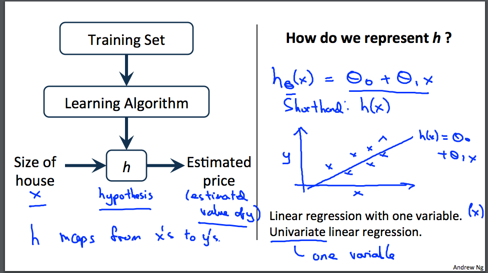
为了建立将来使用的符号，我们将使用 x^(i) 来表示“输入”变量，也称为输入特征，并且y^(i）表示我们试图预测的“输出”或目标变量（价格）。一对（x ^ {（i）}，y ^ {（i）}称为训练集，符号中的上标“（i）”仅仅是训练集中的索引，并且与求幂无关。我们还将使用X表示输入值的空间，Y表示输出值的空间.
为了更正式地描述监督学习问题，我们的目标是，给定一个训练集，学习函数h：X→Y，使得h（x）是对于y的对应值的“好”预测器。由于历史原因，该函数h称为hypothesis(假设)。从图像上看，过程是这样的
当我们试图预测的目标变量是连续的，例如在我们的住房示例中，我们将学习问题称为回归问题。当y可以只取少量离散值时（例如，如果给定居住面积，我们想预测住宅是房子还是公寓，我们称之为分类问题）。
如下图所示:(其中m为数据集的个数)
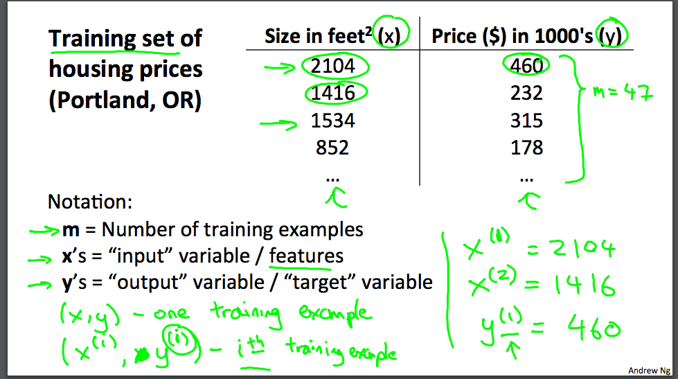
2.Cost Function
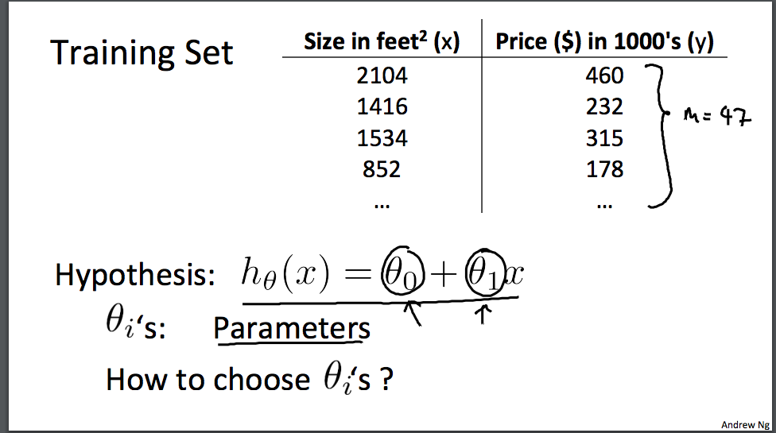
我们有一个训练集 可能就像我在这里绘制的 我们要做的就是 得出θ0 θ1这两个参数的值 来让假设函数表示的直线 尽量地与这些数据点很好的拟合 也许就像这里的这条线一样 那么我们如何得出θ0 θ1的值 来使它很好地拟合数据的呢？我们的想法是 我们要选择 能使h(x) 也就是 输入x时我们预测的值 最接近该样本对应的y值的参数θ0 θ1 所以 在我们的训练集中我们会得到一定数量的样本 我们知道x表示卖出哪所房子 并且知道这所房子的实际价格 所以 我们要尽量选择参数值 使得 在训练集中 给出训练集中的x值 我们能合理准确地预测y的值 让我们给出标准的定义 在线性回归中 我们要解决的是一个最小化问题 所以我要写出关于θ0 θ1的最小化 而且 我希望这个式子极其小 是吧
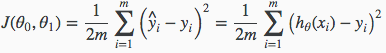
我们可以通过使用代价函数来测量我们的假设函数的准确性。 这需要使用来自x的输入和实际输出y的假设的所有结果的平均差（实际上是平均的更好的版本）。
为了将它分开，它是1/2 -×，其中-x是hθ（xi）-yi的平方的平均值，或者是预测值和实际值之间的差。
该函数另外称为“平方误差函数”或“均方误差”。 为了方便计算梯度下降，平均值被减半（1/2），因为平方函数的导数项将抵消1/2。 下图总结了代价函数的作用：
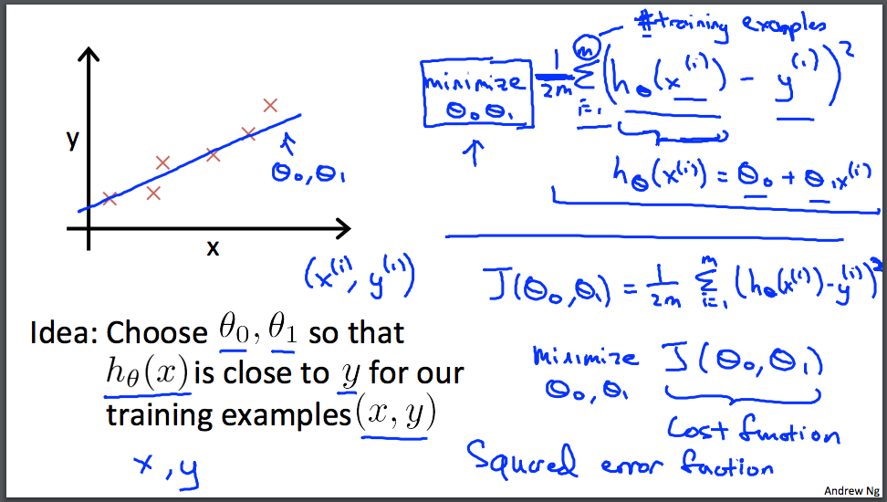
3.Cost Function - Intuition I(theta0 为0)
直观的表示,我们将建立(x,y)坐标,用一条尽可能通过所有数据集的直线
我们的目标是获得最好的线。 最佳可能的线将是这样的，使得散射点与线的平均平方垂直距离将是最小的。 理想情况下，线应该通过我们训练数据集的所有点。 在这种情况下，$$ J（\ theta_0，\ theta_1）$$的值将为0.以下示例显示了我们的代价函数为0的理想情况。
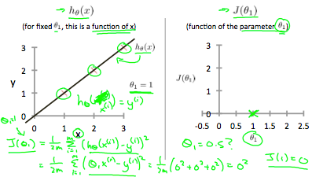
当$$ \ theta_1 = 1 $$时，我们得到的斜率为1，它通过模型中的每个数据点。 相反，当$$ \ theta_1 = 0.5 $$时，我们看到从我们的拟合到数据点的垂直距离增加。
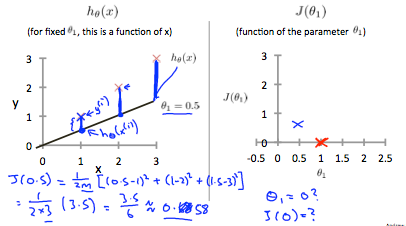
这将我们的代价函数增加到 0.58。 绘制其他几个点可得到以下图表：
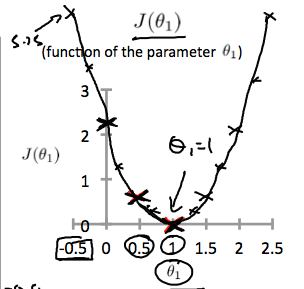
4. Cost Function - Intuition II(theta_0 不为0)
等高线图是包含许多轮廓线的图。 两个可变函数的轮廓线在同一线的所有点处具有恒定值。 这样的图的示例是下面的一个。
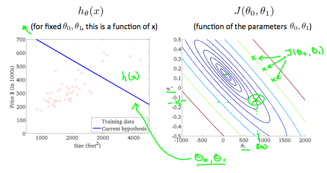
任何颜色沿着“圆”，人们将获得都是相同的代价函数值。 例如，在上面的绿线上找到的三个绿点对于$$ J（\ theta_0，\ theta_1）$$具有相同的值，因此，它们沿着相同的线找到。 当$$ \ theta_0 $$ = 800和$$ \ theta_1 $$ = -0.15时，圆圈x显示左侧图形的成本函数的值。 取另一个h（x）并绘制其等值线图，得到以下图表：
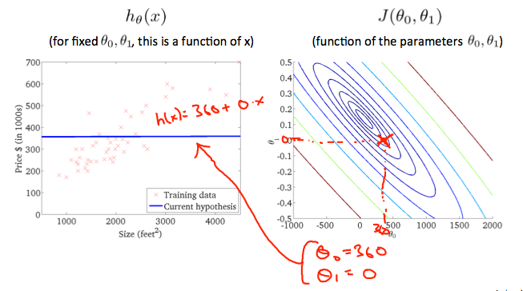
当$$ \ theta_0 $$ = 360和$$ \ theta_1 $$ = 0时，轮廓图中的$$ J（\ theta_0，\ theta_1）$$的值更接近中心，从而降低代价函数误差。 现在给我们的假设函数稍微正的斜率导致更好的数据拟合。
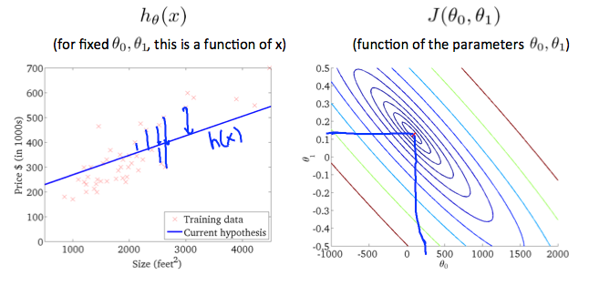